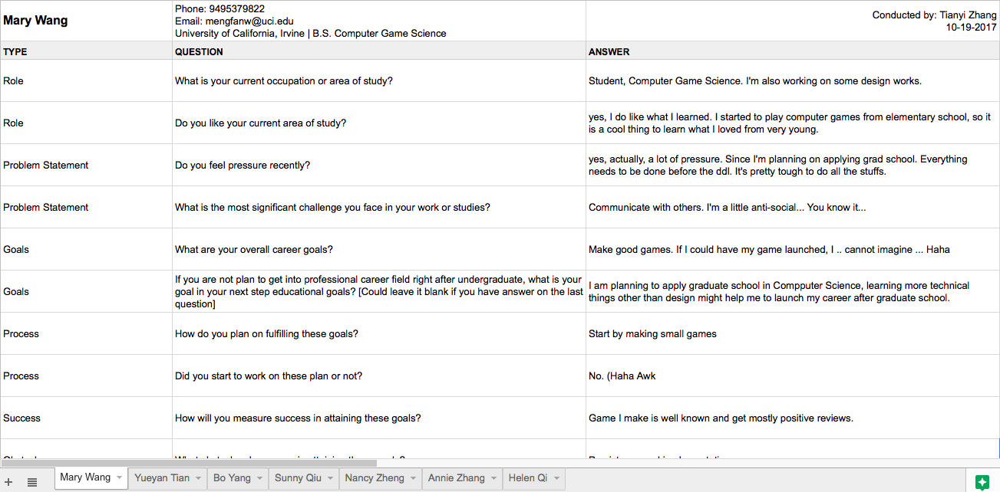
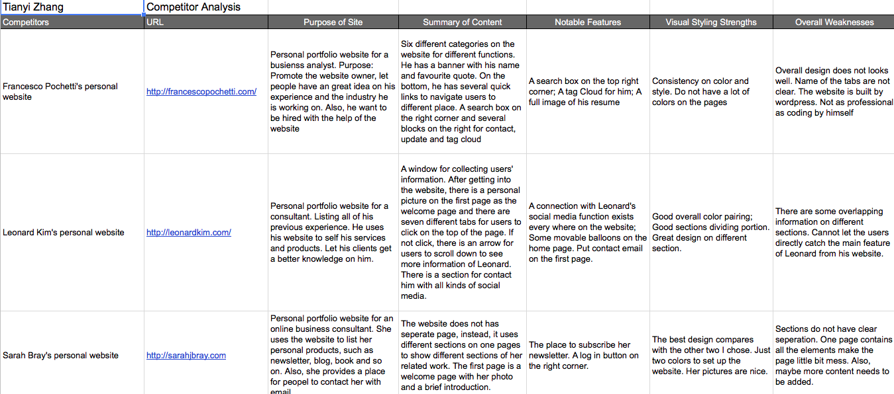
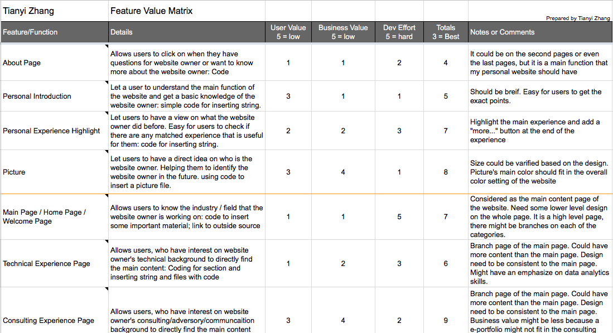
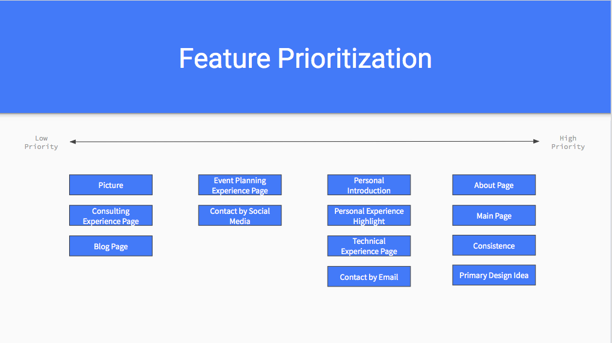
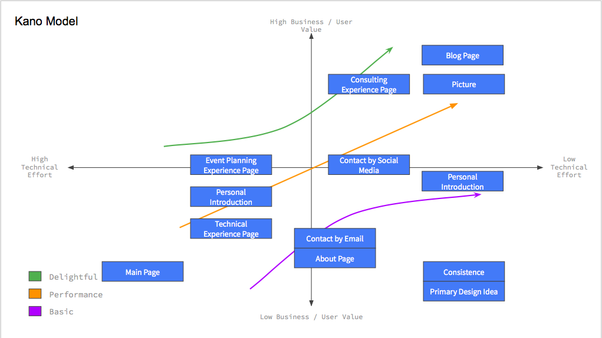
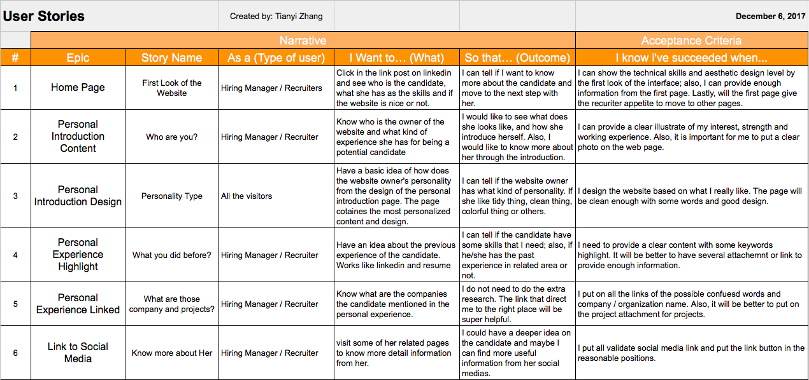
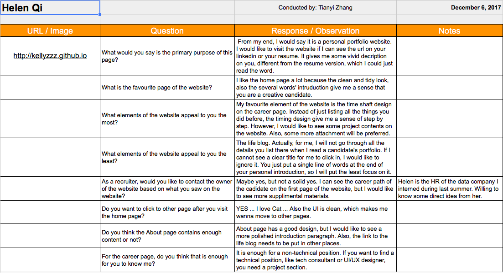
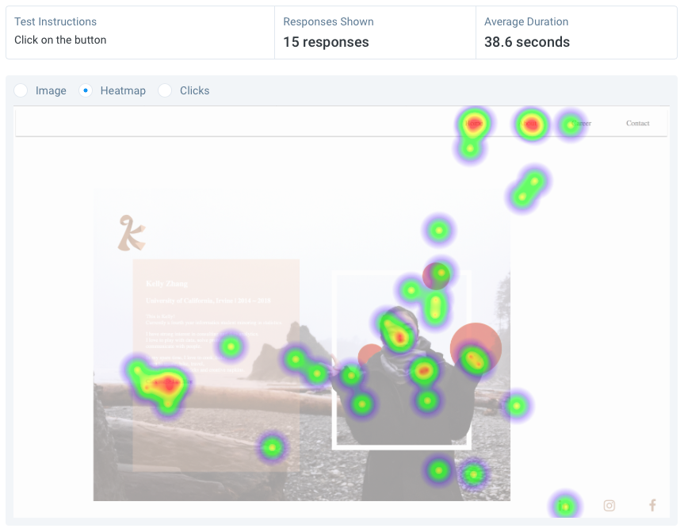
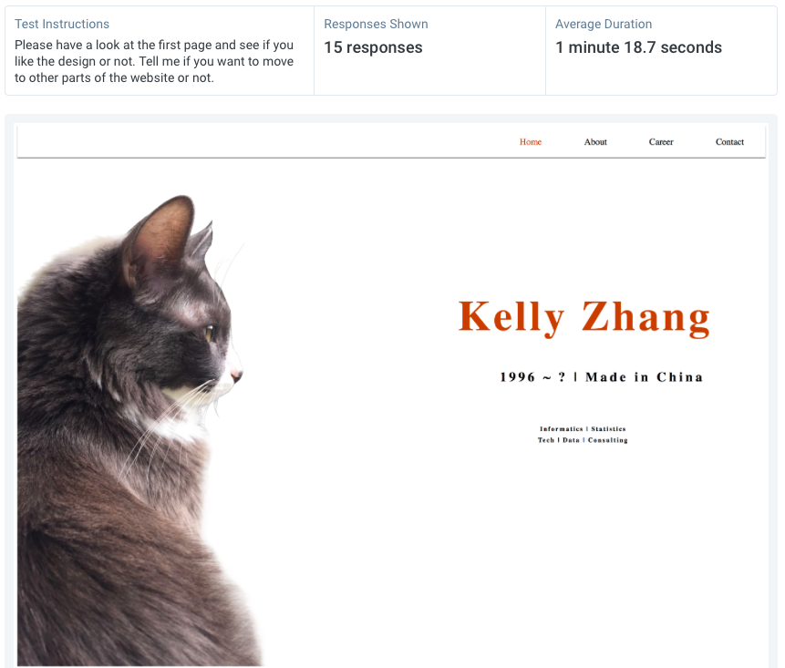

UI / UX is not just about HTML/CSS/JAVASCRIPT
It is extremely important to do the user researches and user testings to see if the project works well for users or not.
The user researches gave the idea for how to start the project and start from where.
The user testings gave the idea for where I should edit and what is not appropriate.
When I code for me website, I never thought that some functions will make the users feel uncomfortable, but the truth is yes, it does.
I learned the frontend coding part from W3, Stack Overflow and codyAcademy, but what INF133 taught me is how to be a designer.
| User Interview | Summary |
|---|---|
|  |
Seven different people get involved in my user interviews. Most of them are students and some of them already stood in their career part. I provide different kinds of questions for them in order to get the different ideas from all of them. From what they told me, I got the idea for the rudiment of my portfolio website. View the User Interview |
| Competitor Analysis | Summary |
|---|---|
|  |
It is important to bring the competitors into concern when we design a product. We need to know what are the things that the market needs for all those products. I found 3 different websites and read what they have. Comparing with what I planned for my website, I have some detailed ideas when I started to code for it. View the Competitor Analysis |
| Feature Value Matrix | Summary |
|---|---|
|  |
It is important to list all the potential functions that I want to include in the website. When I considered about the reasons for putting in the functions, I went back to my rudiment to see if that is necessary to contain everyone. It is really helpful for the planning part. View the Feature Value Matrix |
| Feature Prioritization | Summary |
|---|---|
|   |
Feature Prioritization is the visualization way for me to see who are the most important functions and who are the less important one. It is really helpful for me to start the project. View the Feature Prioritization |
| User Stories | Summary |
|---|---|
|  |
User story is the thing that I did for several years, but the portfolio website is the first project that I did is for myself. I went back to what I have and considered about if all of them are necessary or not. It is always more useful and accurate when you put the functions into the website. View the User Stories |
| Cognitive Walkthrough | Summary |
|---|---|
|  |
Cognitive Walkthrough for me is anothor user research, but afterwards. I found three of the most targeted users. I showed them all the website as a product and let them use it to see if that are good or not. They provided me a lot of useful ideas and advices on each functions and I learned a lot from that part. View the Cognitive Walkthrough |
| User Test | Summary |
|---|---|
|   |
It is my first time to use the usabilityhub for doing User Testing. I conducted a click test to check if I put the clickable buttons on the right place. Also, I put a 5 second staring test to let my users see if the first page is good enough to catch their eye sights. View the User Test #1 View the User Test #2 |
I never thought that there are that much problems from my midterm project. When I did the midterm project. Me and my roommates are the only users of my websites, so I did not really let other people use my websites and the functions on it. The User Research helps me a lot for starting the project. The User testing and the comments for midterm project helps me a lot for editing my website from the midterm to the final.
I looked deep into all of my user researches. I can tell that people from different areas have different kinds of request when they look into the website. I will take their advice and mainly focus on the advice that came from HR and people who already got offer from the desired field that I am willing to join in the future. It will be more helpful.
From the user testing part, I got more next step advice. For the basic technical part, there are several problems on different page. For the first page, which is the welcome page, my users are more than willing to click on my name, which is not clickable based on my design. For the second page, which was the about page, some of my friends told me that the design looks a little bit messy, so it will be better to make it more clear. Also, people cannot find the Life Blog button to click if I put them at the end of my personal introduction. For the third page, which is the career part, muy users do not provide a lot of detailed advice, but I felt that do not have a downloadable resume might become a problem at this point. For the last page, which is the contact page, some people suggest me to put a button to jump to mailbox, some people say no. Also, the grader of my midterm project gave me the advice to put a mailto link to the email address
There are several important things that I learned from the project.
Recognition rather than recall. Minimize cognitive load by maintaining task-relevant information within the display while users explore the interface. Human attention is limited and we are only capable of maintaining around five items in our short-term memory at one time. Due to the limitations of short-term memory, designers should ensure users can simply employ recognition instead of recalling information across parts of the dialogue. Recognizing something is always easier than recall because recognition involves perceiving cues that help us reach into our vast memory and allowing relevant information to surface. For example, we often find the format of multiple choice questions easier than short answer questions on a test because it only requires us to recognize the answer rather than recall it from our memory.
Consistency and standards. Interface designers should ensure that both the graphic elements and terminology are maintained across similar platforms. For example, an icon that represents one category or concept should not represent a different concept when used on a different screen.
Help and documentation. Ideally, we want users to navigate the system without having to resort to documentation. However, depending on the type of solution, documentation may be necessary. When users require help, ensure it is easily located, specific to the task at hand and worded in a way that will guide them through the necessary steps towards a solution to the issue they are facing.
Based on the findings and several detail thing I provided in the previous section, I solved most of the problems and still doing research on some other topics. The website is the first frontend project I did. I found the interest from it and will revamp it during winter break. I believe that User Interface and User Experience is not just about code. We need to be really user friendly to make it work.
Several things that I changed from midterm. For the first page, my name is clickable. As what the professor mentioned in the lecture that the important of image choosing, the cat I use on my home page brings my users' attention to click on my name. I add a second page, which is the current page as the research page to show what I did for the project. For the third page, I re-design the color part of my personal introduction and move the life blog link to a more noticable place. On the fourth page, I put a resume on the career page and it can be downloaded by clicking the link. On the last page, which is the contact page, I make the email clickable and it could directly bring my users to their mailbox. I didnot hide the email address, which is helpful forthe people who like to use the website version of email. I also change some media query code for the page in order to make it fit in more device.
I never thought that I could be a UI/UX designer before. However, I found my interest from the class. Although my code looks immatured, I still try to make those things on the right position. What I did this quarter is just the beginning. I will try to learn more on the user interface, user interaction and user experience field.